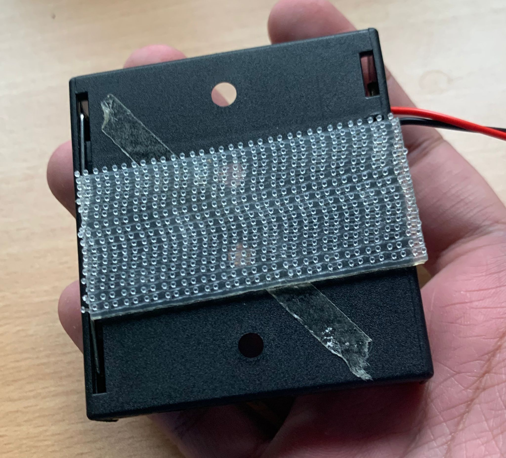

Final Project navigation
Overview • 2D and 3D parts • Electronics and programming • Assembly and final thoughts
Assembly

The completed build.
After completing the programming, I went on to assembling the clock. I hot glued the LCD and button to their respective brackets and hot glued the brackets to the box, where they would face out.
Additionally, to prevent the battery tray from shaking around the box, I used this 3M dual lock velcro tape to adhere it to the inner wall of the clock, while also being easily removable should replacement batteries be needed
FINAL THOUGHTS
This was a very difficult, but very interesting project to work on. Especially with the programming, many errors happened which led to some frustration, but in the end the whole product was satisfying to finish working on.
I have noticed two problems with the project which I think could be improved
1. Due to inherent lag and slight inaccuracies in delay funcitons in the Arduino, some drift from the correct time can occur, leading to inaccurate time readings. This can be fixed with a real time clock (RTC) module, but would likely require me to switch to a new board as I can no longer use the SDA and SCL pins for the LCD display and would require more pins.
2. The batteries may run out eventually as the DHT reading and LCD updating regularly is relatively more power hungry. This could be remedied by adding a hole in the side of the box to allow a cable from a constant power supply to power the clock.